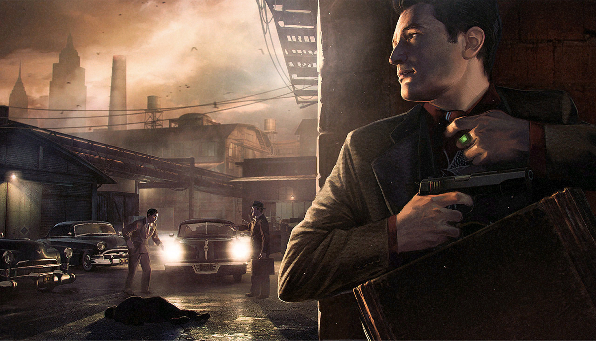
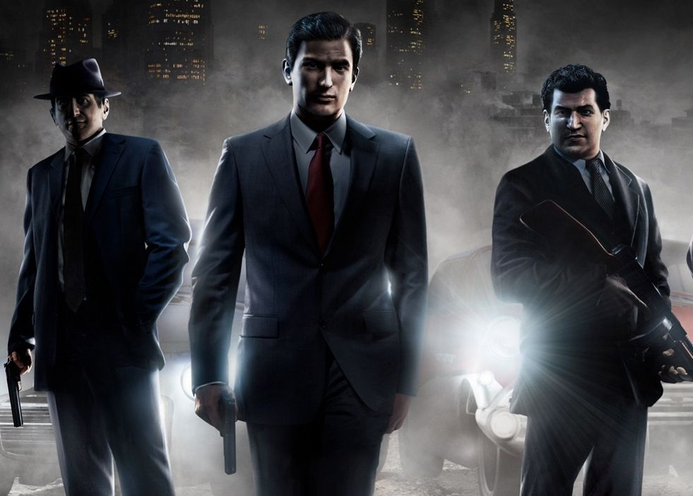
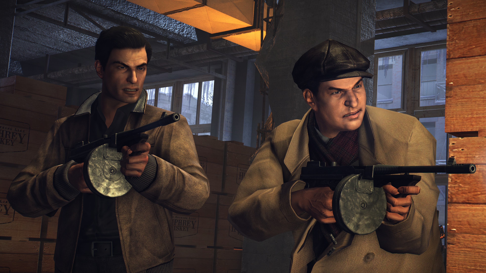
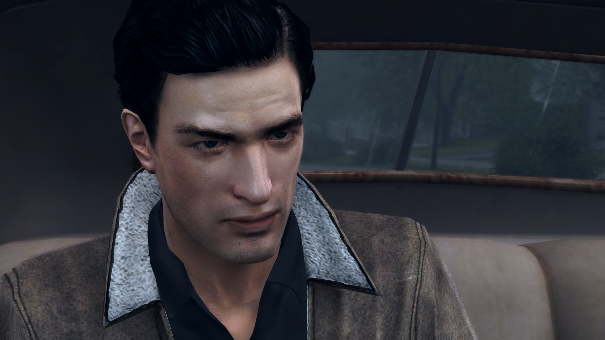

mafia 2: история любви длиною в жизнь
Mafia II — компьютерная игра в жанре приключенческого боевика с открытым миром, сочетающего в себе автомобильный симулятор и шутер от третьего лица, разработанная чешской компанией 2K Czech; вторая игра серии Mafia. Сюжет Mafia II, за исключением некоторых отсылок, не имеет связи с первой частью, однако существует с ней в одной вселенной.

Игра была выпущена в 2010 году на персональных компьютерах под управлением Windows и игровых приставках Xbox 360 и PlayStation 3; в 2011 году вышла на macOS. Зарубежным издателем является американская компания 2K Games, в России издана и переведена на русский язык компанией «1С-СофтКлаб».Введите сообщение
Сюжет
События Mafia II разворачиваются в 1943—1951 годах в вымышленном американском городе Эмпайр-Бэй. В городе «заправляют» три основные мафиозные «семьи»: Винчи, Клементе и Фальконе.
Главный герой, Вито Скалетта, в детстве переехал вместе со своей семьёй из Сицилии в США. Будучи мальчишкой, Вито думал, что в Америке все его мечты станут реальностью, однако на деле всё оказалось иначе. В школе Вито подружился с другим мальчишкой, Джо Барбаро — известным в округе хулиганом. Оба они были из бедных семей, поэтому, став лучшими друзьями, быстро пристрастились к основам бандитизма — работе карманниками, грабежу магазинов и т. д. Однажды повзрослевшие Джо и Вито решили ограбить ювелирный магазин. Первое серьёзное дело оказалось не вполне удачным: их заметил полицейский. Вито был пойман, а Джо удалось скрыться. Шла Вторая мировая война, на фронте требовались добровольцы со знанием итальянского языка, поэтому Вито предоставили выбор: отправиться в тюрьму и отсидеть свой срок или же встать на путь солдата и кровью фашистов искупить свою вину перед обществом. Вито выбрал второй вариант, в результате чего был отправлен на фронт.
В 1943 году Вито в составе парашютного полка отправляется на Сицилию. В ходе выполнения задания Вито оглушает взрывом, но он остается в живых. Фашисты, которые после этого выстрела ворвались в здание, начали добивать солдат, находящихся без сознания, но в тот момент, когда очередь умереть дошла до Вито, приезжает глава сицилийской мафии дон Кало и приказывает войскам Муссолини прекратить стрельбу. Вито остался жив, но был ранен. В 1945 году, получив ранение и пролежав в госпитале, Вито, получив месячный отпуск, возвращается в Эмпайр-Бэй, где его на вокзале сразу встречает Джо. Он «отмазывает» Вито от дальнейшей службы в армии и помогает ему остаться в городе. Где вместе они начинают сотрудничать с мафией, что влечет за собой множество событий, приводящих нас к к неожиданной и легендарной концовки. 